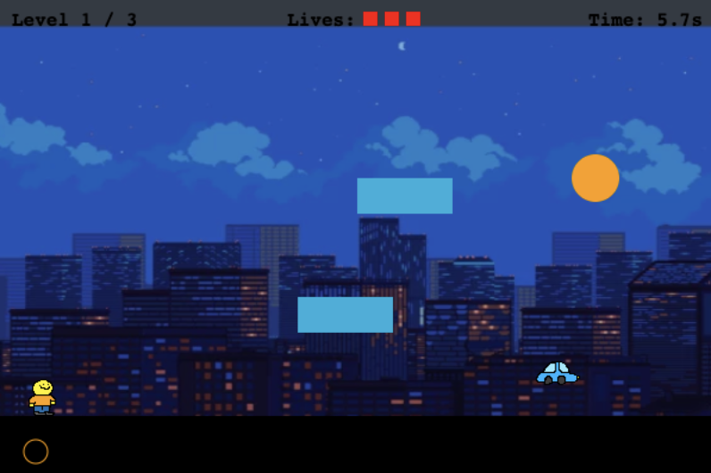

Side Scroller

A side scroller game with 3 levels each, requiring a token to be collected first before allowing access to the next level. Additionally, there will be enemies on each level that will take away 1 life if contacted and if 3 lives are lost, you lose.
Concepts learnt and implemented through this project include physics and collision, camera and parallax scrolling, level flow and game states, sprites, timer, and sound effects. Custom sprites were made through a website called Piskel. The main key issue encountered during the development process was positioning the background to fully fill the canvas.